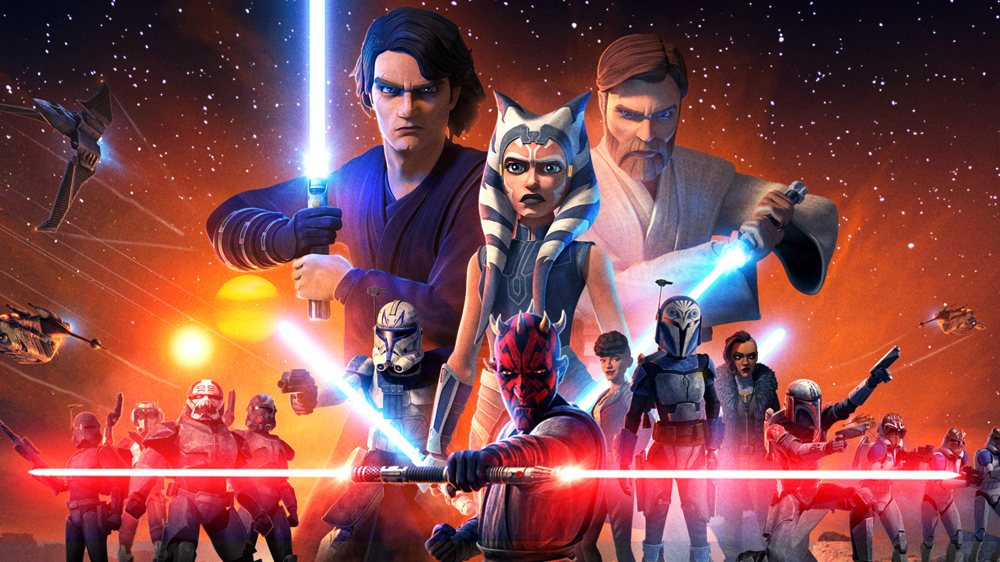

Merhaba. Adım Abdullah. MEB'e bağlı bir ortaöğretim kurumunda Bilişim Teknolojileri Öğretmeni olarak çalışmaktayım. Eğitimin ve kendini geliştirmenin hayat boyu kesintisiz devam eden bir süreç olduğuna inanırım. Bana göre gelişmeyi bırakmış, bu şevkini kaybetmiş birey gerçekte yaşamaktan da vazgeçmiştir.
Daha önce Cisco Networking Academy, IBM Open P-TECH, Unity Learn başta olmak üzere birçok platformda farklı alanlarda eğitimler aldım. Bu alanlarda çeşitli bilgi ve beceriler edindim. Patika'ya benimle benzer vizyona sahip bir arkadaşın tavsiyesi ile dahil oldum. Belirli alanlarda uzmanlaşıp Allah nasip ederse yazılım alanında çalışmak istiyorum.
Çalıştığım kurum: Kızıltepe Fen Lisesi
|
 | Yıldız Savaşları, George Lucas tarafından yaratılmış, öncelikle filmleriyle tanınmış, sonraki yıllarda çizgiroman, bilgisayar ve konsol oyunları, televizyon yapımları vb. dallarda ününü arttırmış kurgusal bir evren ve markadır. |